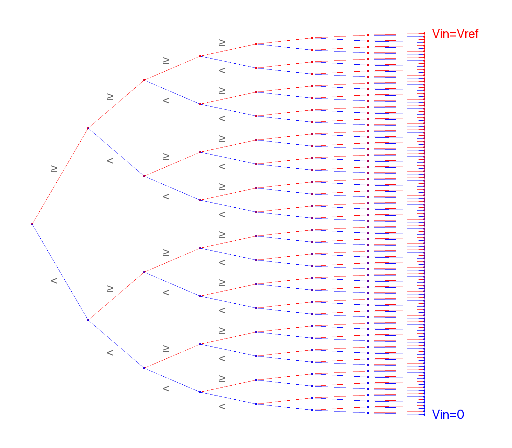

This picture can be used in addition to a textual explanation of SAR to create an intuitive understanding without having to explain any binary search background:

The picture is created from Python code.